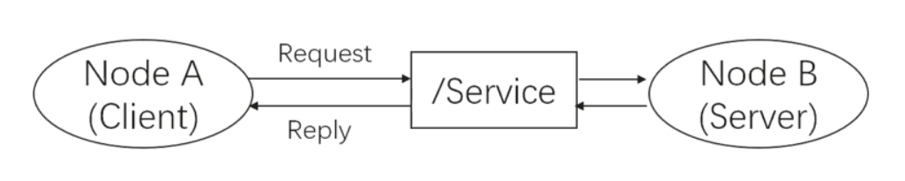
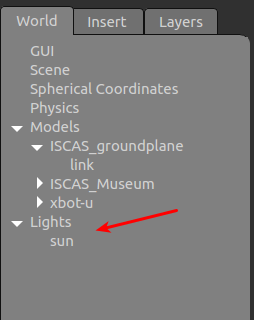
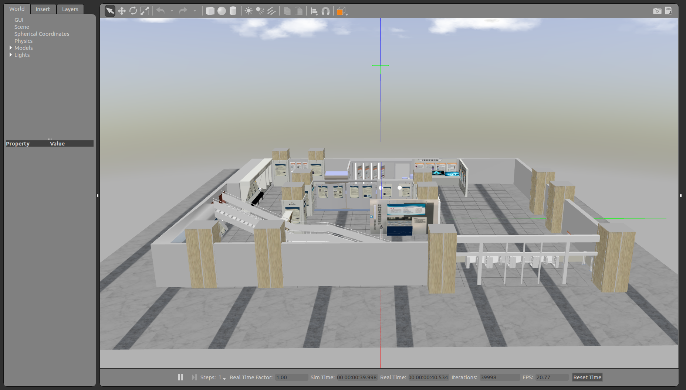
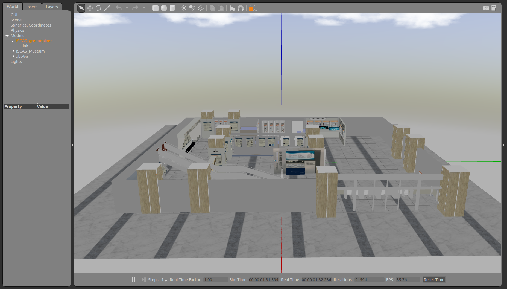
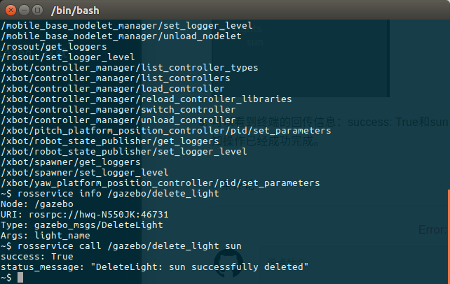

service 服务
上一篇我们介绍了ROS的通信方式中的topic(主题)通信，我们知道topic是ROS中的一种单向的异步通信方式。然而有些时候单向的通信满足不了通信要求，比如当一些节点只是临时而非周期性的需要某些数据，如果用topic通信方式时就会消耗大量不必要的系统资源，造成系统的低效率高功耗。 这种情况下，就需要有另外一种请求-查询式的通信模型(C/S模型)。这节我们来介绍ROS通信中的另一种通信方式——service(服务)。
一、service工作原理
为了解决以上问题，service方式在通信模型上与topic做了区别。Service通信是双向的，它不仅可以发送消息，同时还会有反馈。所以service包括两部分，一部分是请求方（Client），另一部分是应答方/服务提供方（Server）。请求方（Client）发送一个request，要等待server处理，处理完成之后，server反馈回一个reply，这样通过类似“请求-应答”的机制完成整个服务通信。
这种通信方式的示意图如下： Node B是server（应答方），提供了一个服务的接口，叫做/Service，我们一般都会用string类型来指定service的名称，类似于topic。Node A向Node B发起请求，经过Node B处理后，Node A得到了反馈。 
通信过程：
Service是同步通信方式，所谓同步就是说：
- Node A发布请求后会在原地等待reply。
- Node B处理完成之后，返回一个reply。
- Node A继续执行。
Node A等待过程中，是处于阻塞状态的。这样的通信模型没有频繁的消息传递，没有冲突与高系统资源的占用，只有接受请求才执行服务，简单而且高效。
二、topic vs service
我们对比一下这两种最常用的通信方式，加深我们对两者的理解和认识，具体见下表：
| 名称 | Topic | Service |
|---|---|---|
| 通信方式 | 异步通信 | 同步通信 |
| 实现原理 | TCP/IP | TCP/IP |
| 通信模型 | Publish-Subscribe | Request-Reply |
| 映射关系 | Publish-Subscribe(多对多) | Request-Reply（多对一） |
| 特点 | 接受者收到数据会回调（Callback） | 远程过程调用（RPC）服务器端的服务 |
| 应用场景 | 连续、高频的数据发布 | 低频(偶尔)使用的功能/具体的任务 |
| 举例 | 激光雷达、里程计发布数据 | 开关传感器、拍照、逆解计算 |
注意：远程过程调用(Remote Procedure Call，RPC),可以简单通俗的理解为在一个进程里调用另一个进程的函数。
三、service操作命令
在实际应用中，service通信方式的命令时rosservice，具体的命令参数如下表：
| rosservice 命令 | 作用 |
|---|---|
| rosservice list | 显示服务列表 |
| rosservice info | 打印服务信息 |
| rosservice type | 打印服务类型 |
| rosservice uri | 打印服务ROSRPC uri |
| rosservice find | 按服务类型查找服务 |
| rosservice call | 使用所提供的args调用服务 |
| rosservice args | 打印服务参数 |
四、测试示例
- 首先依然是打开我们教材的模拟场景：
roslaunch robot_sim_demo robot_spawn.launch。 - 输入rosservice list，查看当前运行的服务。
- 随机选择/gazebo/delete_light服务，观察名称，是删除光源的操作。
- 输入rosservice info /gazebo/delete_light查看属性信息。可以看到信息，Node：/gazebo，Type：gazebo_msgs/DeleteLight, Args：Light_name。这里的类型type也就是下文介绍的srv,传递参数Light_name
输入rosservice call /gazebo/delete_light sun,这里的sun 是参数名，使我们模拟场景中的唯一光源太阳。操作完成后可以看到场景中的光线消失。

前：  后：  
- 可以看到终端的回传信息：success: True和sun successfully deleted。这就是双向通信的信息反馈，通知操作已经成功完成。
五、小结
Service是一种请求-反馈的通信机制。请求的一方通常被称为客户端，提供服务的一方叫做服务器端。Service机制相比于Topic的不同之处在于：
- 消息的传输是双向的，有反馈的，而不是单一的流向。
- 消息往往不会以固定频率传输，不连续，而是在需要时才会向服务器发起请求。